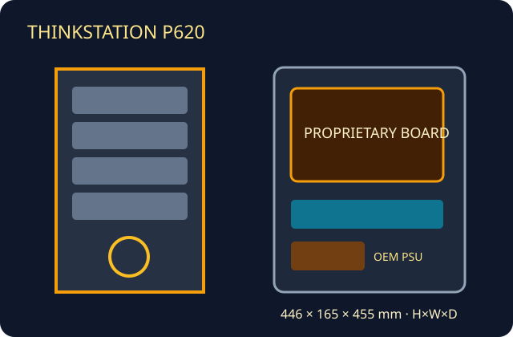

[ AMD THREADRIPPER PRO TOWER ]
Lenovo ThinkStation P620
Single-socket Threadripper Pro generation chassis. System board, PSU and fan modules remain machine-specific.

Specifications & fit
| Model / revision | ThinkStation P620; identify exact machine type and component generation before sourcing FRUs. |
|---|---|
| Board form factor | Lenovo proprietary Threadripper Pro system board and tray; no standard motherboard form factor is specified for case reuse. |
| Dimensions | 446 × 165 × 455 mm (H × W × D), published chassis dimensions. |
| PSU | OEM 1000 W supply for documented configurations; confirm exact PSU label, connectors and GPU power budget for the machine type. |
| GPU / cooler / radiator fit | Lenovo lists professional single- and multi-GPU configurations; card count, slot width, support bracket and available power are configuration-specific. Factory CPU thermal assembly/air duct is required. No generic radiator envelope is documented. |
| Drive bays | Up to four 3.5-inch SATA drives plus M.2 NVMe positions in supported combinations; optional slim optical bay on configurations that include it. |
| Airflow | OEM front/rear fan assemblies and CPU/GPU airflow guides form the designed path; do not remove memory/CPU baffles or assume aftermarket fan mounts. |
| Serviceability / compatibility | Follow the Lenovo Hardware Maintenance Manual. Cages, GPU retainers, fans, system board and power cabling are P620-specific; not standard ATX-compatible. |
Manufacturer sources
- Lenovo PSREF — ThinkStation P620Model-specific system specifications and supported options.
- Lenovo — ThinkStation P620 datasheetPlatform and workstation configuration data.
- Lenovo — ThinkStation P620 Hardware Maintenance ManualService procedures for OEM cooling and replaceable parts.